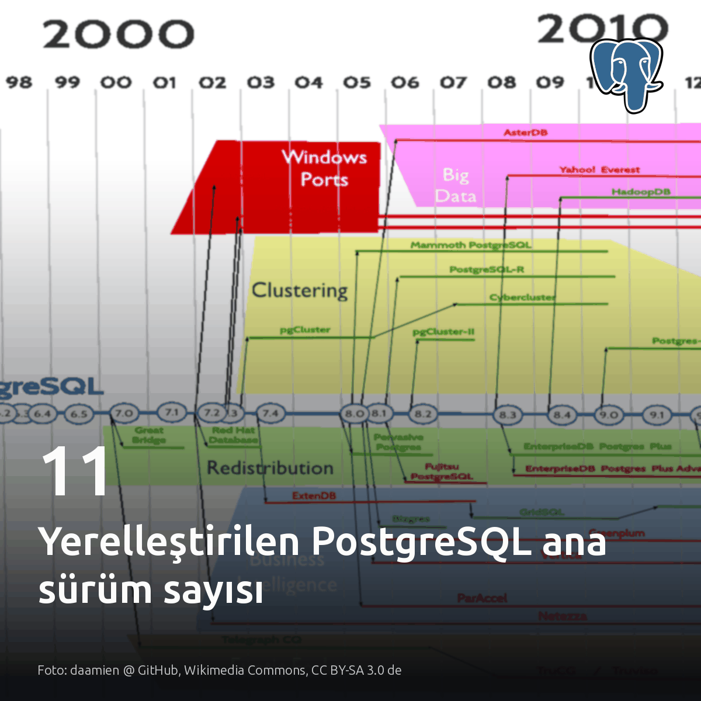
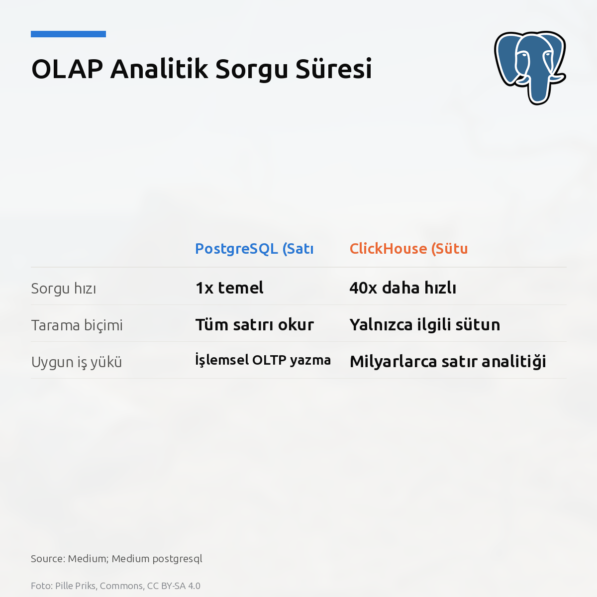
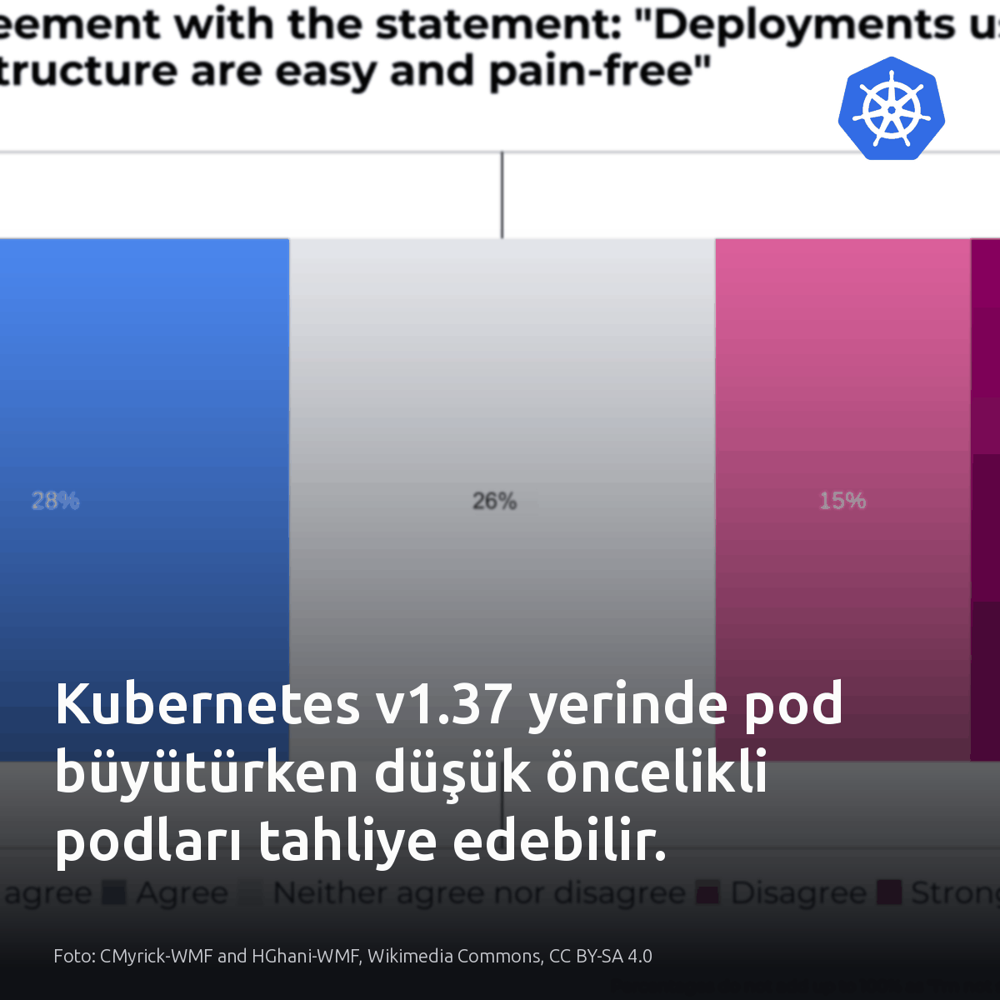
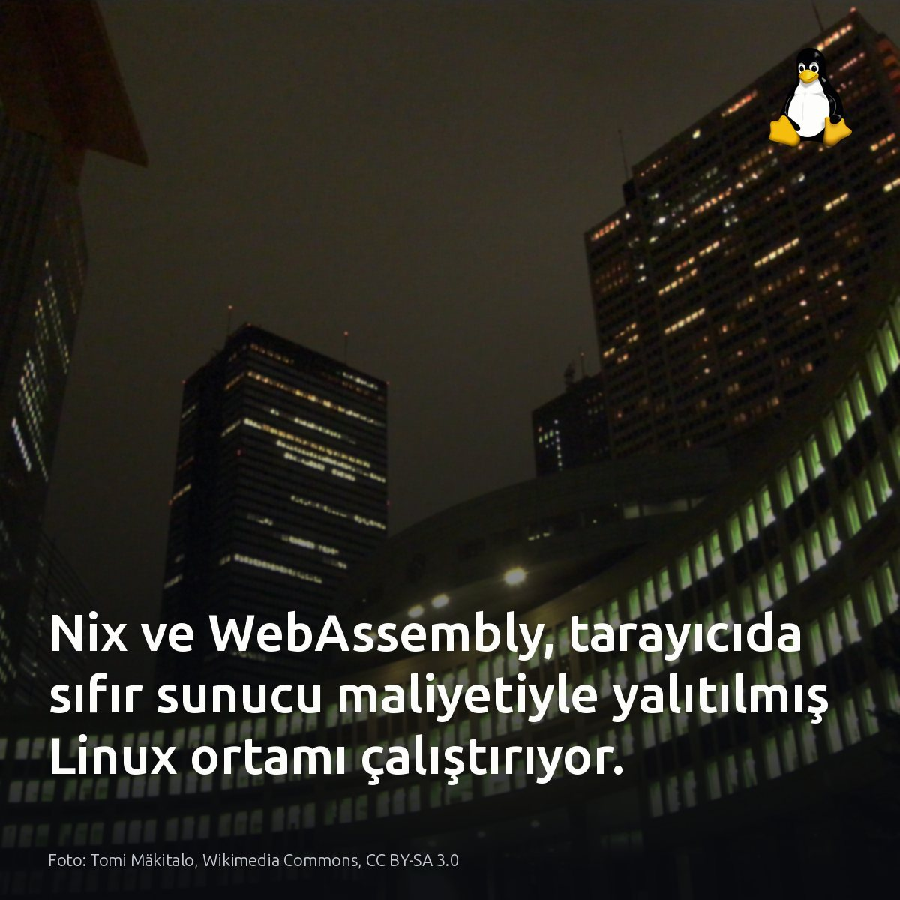

Metni kopyala, kartı indir, LinkedIn'de yapıştır. Bağlantılar gönderiye değil ilk yoruma.

Çin, PostgreSQL'in 10'dan 20'ye kadar 11 ana sürümünün tüm teknik külliyatını yerelleştirdi. Bugün yayına giren pgsql.cc portalı, kapalı kaynaklı ticari lisanslardan yerel açık kaynak kümelerine kitlesel göçün sahada tamamlandığını somut olarak belgeliyor. Bu artık ulusal standart. #postgresql #opensource #databaseKartı indir
Kaynaklar ve resmi duyuru bağlantıları: - Görsel ve veri kaynağı: Planet PostgreSQL (https://postgr.es/p/9uf) - pgsql.cc resmi sürüm dokümantasyonu: https://postgr.es/p/9uf

ClickHouse analitik sorgularda PostgreSQL'den 40 kat daha hızlı. 100 milyon satırlık analitik sorguyu 9,7 saniyeden 0,24 saniyeye çekebiliyor. Ama Postgres'i terk etmiyoruz. Sık güncellemeler, foreign key kısıtları ve katı transaction yönetimi için PostgreSQL yerinde kalmalı. Canlı OLTP yükü için PostgreSQL, devasa log taramaları için ikincil ClickHouse kümesi seçilmeli. Sisteminizdeki pg_stat_statements tablosunda en yüksek I/O tüketen sequential scan sürelerine bakın. #postgresql #clickhouse #olapKartı indir
Yazıda geçen kıyaslama ve başarım verilerinin kaynağı: Kart kaynağı: Medium; Medium postgresql Benchmark ve analiz raporu [S1-S5]: https://medium.com/@loengnavy/postgresql-vs-clickhouse-vs-duckdb-why-columnar-databases-can-be-40-faster-c59f3338b5b8?source=rss------postgresql-5

Kubernetes v1.37, yerinde pod büyütürken aynı düğümdeki alt öncelikli podları aniden tahliye edebiliyor. Kritik yan konteynerler durur. Düğümde kaynak tükendiğinde planlayıcı, büyüyen poda yer açmak için alt öncelikli servisleri uyarısız sonlandırıyor; kümedeki PriorityClass ve QoS tanımlarına hemen bakmak gerekiyor. Pod öncelikleri eşit tutulan ya da kaynak payı ayrılmış düğümlerde bu durum geçerli değildir. #kubernetes #devops #platformengineeringKartı indir
Kaynaklar ve görsel referansı: - Kubernetes v1.37 Scheduler Preemption for In-Place Pod Resize: https://kubernetes.io/blog/2026/09/10/kubernetes-v1-37-scheduler-preemption-for-in-place-pod-resize-alpha/ - Görsel kaynağı: CMyrick-WMF and HGhani-WMF, Wikimedia Commons, CC BY-SA 4.0

Tarayıcıda son 13 yıla ait herhangi bir Linux paketini çalıştırmak artık mümkün. Arka planda hiçbir sunucu çalışmıyor. Tüm mekanizma, Nix'in kriptografik içerik adresleme modeline dayanıyor. Her kütüphane izole bir hash dizinine derlendiğinden paylaşılan bağımlılık ve glibc sürüm çakışmaları tamamen ortadan kalkıyor. Bağımlılık karmaşası yaşanmıyor. trynix.dev, WebAssembly üzerindeki QEMU emülatörüyle x86_64 bir Linux çekirdeğini doğrudan tarayıcı belleğinde çalıştırıyor. Paket blokları, salt-okunur statik önbelleklerden ihtiyaç duyuldukça çekiliyor. Sanal makine saniyeler içinde açılıyor. İstemci tarafındaki bu determinizm, yalıtılmış testler için harici altyapı ihtiyacını ortadan kaldırıyor. #nix #webassembly #linuxKartı indir
Kaynaklar ve teknik detaylar: • trynix.dev duyurusu ve incelemesi: https://simonwillison.net/2026/Sep/10/trynix/ • Mimari analiz (Farid Zakaria): https://fzakaria.com/2026/09/04/any-nix-package-live-in-your-browser • Görsel kaynağı: Tomi Mäkitalo, Wikimedia Commons, CC BY-SA 3.0
{kind=link}
{kind=link}
{kind=link}
{kind=link}